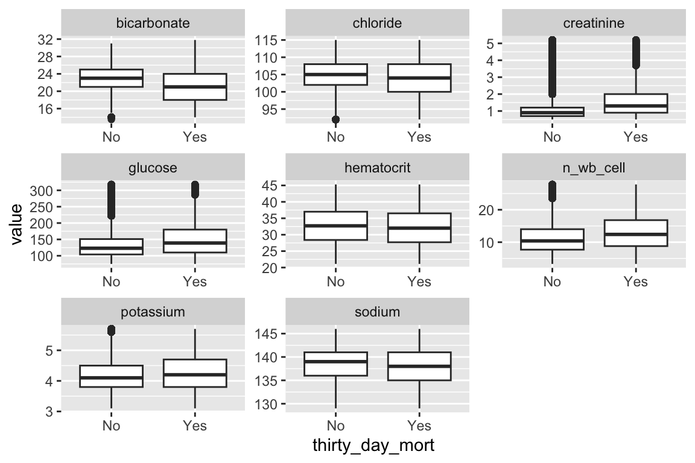

sessionInfo()Biostat 203B Homework 2
Due Feb 10 @ 11:59PM
Display machine information for reproducibility:
Load necessary libraries (you can add more as needed).
library(data.table)
library(lubridate)
library(R.utils)
library(tidyverse)MIMIC data location
mimic_path <- "~/mimic"In this exercise, we use tidyverse (ggplot2, dplyr, etc) to explore the MIMIC-IV data introduced in homework 1 and to build a cohort of ICU stays.
Display the contents of MIMIC data folder.
system(str_c("ls -l ", mimic_path, "/"), intern = TRUE) [1] "total 24"
[2] "lrwxr-xr-x 1 felicity staff 24 Jan 27 16:25 Desktop -> /Users/felicity/Desktop/"
[3] "-rw-rw-r--@ 1 felicity staff 2518 Mar 10 2021 LICENSE.txt"
[4] "drwxr-xr-x@ 5 felicity staff 160 Jan 26 15:00 MIMIC-reduce-chartevents"
[5] "-rw-rw-r--@ 1 felicity staff 2459 Mar 16 2021 SHA256SUMS.txt"
[6] "drwxr-xr-x@ 7 felicity staff 224 Jan 27 12:55 core"
[7] "drwxr-xr-x@ 21 felicity staff 672 Jan 26 15:00 hosp"
[8] "drwxr-xr-x@ 11 felicity staff 352 Jan 26 15:00 icu"
[9] "-rw-rw-r--@ 1 felicity staff 797 Jan 4 2022 index.html"
[10] "lrwxr-xr-x 1 felicity staff 36 Jan 27 16:10 mimic-iv-1.0 -> /Users/felicity/Desktop/mimic-iv-1.0"system(str_c("ls -l ", mimic_path, "/core"), intern = TRUE)[1] "total 142944"
[2] "-rw-rw-r--@ 1 felicity staff 17208966 Mar 15 2021 admissions.csv.gz"
[3] "-rw-rw-r--@ 1 felicity staff 606 Jan 4 2022 index.html"
[4] "-rw-rw-r--@ 1 felicity staff 2955582 Mar 15 2021 patients.csv.gz"
[5] "-rw-rw-r--@ 1 felicity staff 53014503 Mar 15 2021 transfers.csv.gz" system(str_c("ls -l ", mimic_path, "/hosp"), intern = TRUE) [1] "total 9243184"
[2] "-rw-rw-r--@ 1 felicity staff 430049 Mar 15 2021 d_hcpcs.csv.gz"
[3] "-rw-rw-r--@ 1 felicity staff 863239 Mar 15 2021 d_icd_diagnoses.csv.gz"
[4] "-rw-rw-r--@ 1 felicity staff 579998 Mar 15 2021 d_icd_procedures.csv.gz"
[5] "-rw-rw-r--@ 1 felicity staff 14898 Mar 15 2021 d_labitems.csv.gz"
[6] "-rw-rw-r--@ 1 felicity staff 29531152 Mar 15 2021 diagnoses_icd.csv.gz"
[7] "-rw-rw-r--@ 1 felicity staff 11684062 Mar 15 2021 drgcodes.csv.gz"
[8] "-rw-rw-r--@ 1 felicity staff 515763427 Mar 15 2021 emar.csv.gz"
[9] "-rw-rw-r--@ 1 felicity staff 476252563 Mar 15 2021 emar_detail.csv.gz"
[10] "-rw-rw-r--@ 1 felicity staff 2098831 Mar 15 2021 hcpcsevents.csv.gz"
[11] "-rw-rw-r--@ 1 felicity staff 2325 Jan 4 2022 index.html"
[12] "-rw-rw-r--@ 1 felicity staff 2091865786 Mar 15 2021 labevents.csv.gz"
[13] "-rw-rw-r--@ 1 felicity staff 171624288 Jan 27 2022 labevents_filtered_itemid.csv.gz"
[14] "-rw-rw-r--@ 1 felicity staff 99133381 Mar 15 2021 microbiologyevents.csv.gz"
[15] "-rw-rw-r--@ 1 felicity staff 422874088 Mar 15 2021 pharmacy.csv.gz"
[16] "-rw-rw-r--@ 1 felicity staff 501381155 Mar 15 2021 poe.csv.gz"
[17] "-rw-rw-r--@ 1 felicity staff 24020923 Mar 15 2021 poe_detail.csv.gz"
[18] "-rw-rw-r--@ 1 felicity staff 367041717 Mar 15 2021 prescriptions.csv.gz"
[19] "-rw-rw-r--@ 1 felicity staff 7750325 Mar 15 2021 procedures_icd.csv.gz"
[20] "-rw-rw-r--@ 1 felicity staff 9565293 Mar 15 2021 services.csv.gz" system(str_c("ls -l ", mimic_path, "/icu"), intern = TRUE) [1] "total 5698008"
[2] "-rw-rw-r--@ 1 felicity staff 2350783547 Mar 15 2021 chartevents.csv.gz"
[3] "-rw-rw-r--@ 1 felicity staff 110272408 Jan 27 2022 chartevents_filtered_itemid.csv.gz"
[4] "-rw-rw-r--@ 1 felicity staff 55917 Mar 15 2021 d_items.csv.gz"
[5] "-rw-rw-r--@ 1 felicity staff 43296273 Mar 15 2021 datetimeevents.csv.gz"
[6] "-rw-rw-r--@ 1 felicity staff 2848628 Mar 15 2021 icustays.csv.gz"
[7] "-rw-rw-r--@ 1 felicity staff 1103 Jan 4 2022 index.html"
[8] "-rw-rw-r--@ 1 felicity staff 352443512 Mar 15 2021 inputevents.csv.gz"
[9] "-rw-rw-r--@ 1 felicity staff 37095672 Mar 15 2021 outputevents.csv.gz"
[10] "-rw-rw-r--@ 1 felicity staff 20567368 Mar 15 2021 procedureevents.csv.gz" 1 Q1. read.csv (base R) vs read_csv (tidyverse) vs fread (data.table)
There are quite a few utilities in R for reading plain text data files. Let us test the speed of reading a moderate sized compressed csv file, admissions.csv.gz, by three programs: read.csv in base R, read_csv in tidyverse, and fread in the popular data.table package.
system.time(time1 <- read.csv(str_c(mimic_path,"/core/admissions.csv.gz"))) user system elapsed
12.313 0.381 13.116 system.time(time2 <- read_csv(str_c(mimic_path,"/core/admissions.csv.gz"))) user system elapsed
3.079 0.682 1.877 system.time(time3 <- fread(str_c(mimic_path,"/core/admissions.csv.gz"))) user system elapsed
0.947 0.362 1.340 Which function is fastest? ‘fread’ function is the fastest.
Is there difference in the (default) parsed data types? (Hint: R function system.time measures run times.) read.csv and fread read subject_id as integer while read_csv read subjecct_id as character.
For later questions, we stick to the read_csv in tidyverse.
2 Q2. ICU stays
icustays.csv.gz (https://mimic.mit.edu/docs/iv/modules/icu/icustays/) contains data about Intensive Care Units (ICU) stays. The first 10 lines are
system(
str_c(
"zcat < ",
str_c(mimic_path, "/icu/icustays.csv.gz"),
" | head"
),
intern = TRUE
) [1] "subject_id,hadm_id,stay_id,first_careunit,last_careunit,intime,outtime,los"
[2] "17867402,24528534,31793211,Trauma SICU (TSICU),Trauma SICU (TSICU),2154-03-03 04:11:00,2154-03-04 18:16:56,1.5874537037037035"
[3] "14435996,28960964,31983544,Trauma SICU (TSICU),Trauma SICU (TSICU),2150-06-19 17:57:00,2150-06-22 18:33:54,3.025625"
[4] "17609946,27385897,33183475,Trauma SICU (TSICU),Trauma SICU (TSICU),2138-02-05 18:54:00,2138-02-15 12:42:05,9.741724537037038"
[5] "18966770,23483021,34131444,Trauma SICU (TSICU),Trauma SICU (TSICU),2123-10-25 10:35:00,2123-10-25 18:59:47,0.35054398148148147"
[6] "12776735,20817525,34547665,Neuro Stepdown,Neuro Stepdown,2200-07-12 00:33:00,2200-07-13 16:44:40,1.6747685185185184"
[7] "10215159,24283593,34569476,Trauma SICU (TSICU),Trauma SICU (TSICU),2124-09-20 15:05:29,2124-09-21 22:06:58,1.2926967592592593"
[8] "14489052,26516390,35056286,Trauma SICU (TSICU),Trauma SICU (TSICU),2118-10-26 10:33:56,2118-10-26 20:28:10,0.4126620370370371"
[9] "15914763,28906020,36909804,Trauma SICU (TSICU),Trauma SICU (TSICU),2176-12-14 12:00:00,2176-12-17 11:47:01,2.9909837962962964"
[10] "16256226,20013290,39289362,Neuro Stepdown,Neuro Stepdown,2150-12-20 16:09:08,2150-12-21 14:58:40,0.9510648148148149" - Import
icustatys.csv.gzas a tibbleicustays_tble.
system.time(icustays_tble<-
read_csv(str_c(mimic_path, "/icu/icustays.csv.gz"))%>%
print(width=Inf)
) # A tibble: 76,540 × 8
subject_id hadm_id stay_id first_careunit
<dbl> <dbl> <dbl> <chr>
1 17867402 24528534 31793211 Trauma SICU (TSICU)
2 14435996 28960964 31983544 Trauma SICU (TSICU)
3 17609946 27385897 33183475 Trauma SICU (TSICU)
4 18966770 23483021 34131444 Trauma SICU (TSICU)
5 12776735 20817525 34547665 Neuro Stepdown
6 10215159 24283593 34569476 Trauma SICU (TSICU)
7 14489052 26516390 35056286 Trauma SICU (TSICU)
8 15914763 28906020 36909804 Trauma SICU (TSICU)
9 16256226 20013290 39289362 Neuro Stepdown
10 19194449 21641999 39387567 Coronary Care Unit (CCU)
last_careunit intime outtime los
<chr> <dttm> <dttm> <dbl>
1 Trauma SICU (TSICU) 2154-03-03 04:11:00 2154-03-04 18:16:56 1.59
2 Trauma SICU (TSICU) 2150-06-19 17:57:00 2150-06-22 18:33:54 3.03
3 Trauma SICU (TSICU) 2138-02-05 18:54:00 2138-02-15 12:42:05 9.74
4 Trauma SICU (TSICU) 2123-10-25 10:35:00 2123-10-25 18:59:47 0.351
5 Neuro Stepdown 2200-07-12 00:33:00 2200-07-13 16:44:40 1.67
6 Trauma SICU (TSICU) 2124-09-20 15:05:29 2124-09-21 22:06:58 1.29
7 Trauma SICU (TSICU) 2118-10-26 10:33:56 2118-10-26 20:28:10 0.413
8 Trauma SICU (TSICU) 2176-12-14 12:00:00 2176-12-17 11:47:01 2.99
9 Neuro Stepdown 2150-12-20 16:09:08 2150-12-21 14:58:40 0.951
10 Coronary Care Unit (CCU) 2123-11-12 02:53:35 2123-11-12 13:52:03 0.457
# … with 76,530 more rows user system elapsed
0.454 0.110 0.322 - How many unique
subject_id? Can asubject_idhave multiple ICU stays?
icustays_tble %>%
distinct(subject_id, .keep_all = FALSE) %>%
nrow()[1] 53150- Summarize the number of ICU stays per
subject_idby graphs.
icustays_tble %>%
count(subject_id) %>%
ggplot() +
geom_bar(mapping = aes(x = n)) +
labs(x = "ICU stays of patient")- For each
subject_id, let’s only keep the first ICU stay in the tibbleicustays_tble. (Hint:slice_minandslice_maxmay take long. Think alternative ways to achieve the same function.)
icustays_tble <- icustays_tble %>%
arrange(subject_id, intime) %>%
distinct(subject_id, .keep_all = TRUE) %>%
print(width = Inf)# A tibble: 53,150 × 8
subject_id hadm_id stay_id first_careunit
<dbl> <dbl> <dbl> <chr>
1 10000032 29079034 39553978 Medical Intensive Care Unit (MICU)
2 10000980 26913865 39765666 Medical Intensive Care Unit (MICU)
3 10001217 24597018 37067082 Surgical Intensive Care Unit (SICU)
4 10001725 25563031 31205490 Medical/Surgical Intensive Care Unit (MICU/SICU)
5 10001884 26184834 37510196 Medical Intensive Care Unit (MICU)
6 10002013 23581541 39060235 Cardiac Vascular Intensive Care Unit (CVICU)
7 10002155 23822395 33685454 Coronary Care Unit (CCU)
8 10002223 22494570 39638202 Trauma SICU (TSICU)
9 10002348 22725460 32610785 Neuro Intermediate
10 10002428 28662225 33987268 Medical Intensive Care Unit (MICU)
last_careunit intime
<chr> <dttm>
1 Medical Intensive Care Unit (MICU) 2180-07-23 14:00:00
2 Medical Intensive Care Unit (MICU) 2189-06-27 08:42:00
3 Surgical Intensive Care Unit (SICU) 2157-11-20 19:18:02
4 Medical/Surgical Intensive Care Unit (MICU/SICU) 2110-04-11 15:52:22
5 Medical Intensive Care Unit (MICU) 2131-01-11 04:20:05
6 Cardiac Vascular Intensive Care Unit (CVICU) 2160-05-18 10:00:53
7 Coronary Care Unit (CCU) 2129-08-04 12:45:00
8 Trauma SICU (TSICU) 2158-01-15 08:01:49
9 Neuro Intermediate 2112-11-30 23:24:00
10 Medical Intensive Care Unit (MICU) 2156-04-12 16:24:18
outtime los
<dttm> <dbl>
1 2180-07-23 23:50:47 0.410
2 2189-06-27 20:38:27 0.498
3 2157-11-21 22:08:00 1.12
4 2110-04-12 23:59:56 1.34
5 2131-01-20 08:27:30 9.17
6 2160-05-19 17:33:33 1.31
7 2129-08-10 17:02:38 6.18
8 2158-01-16 15:19:24 1.30
9 2112-12-10 18:25:13 9.79
10 2156-04-17 15:57:08 4.98
# … with 53,140 more rows3 Q3. admission data
Information of the patients admitted into hospital is available in admissions.csv.gz. See https://mimic.mit.edu/docs/iv/modules/hosp/admissions/ for details of each field in this file. The first 10 lines are
system(
str_c(
"zcat < ",
str_c(mimic_path, "/core/admissions.csv.gz"),
" | head"
),
intern = TRUE
) [1] "subject_id,hadm_id,admittime,dischtime,deathtime,admission_type,admission_location,discharge_location,insurance,language,marital_status,ethnicity,edregtime,edouttime,hospital_expire_flag"
[2] "14679932,21038362,2139-09-26 14:16:00,2139-09-28 11:30:00,,ELECTIVE,,HOME,Other,ENGLISH,SINGLE,UNKNOWN,,,0"
[3] "15585972,24941086,2123-10-07 23:56:00,2123-10-12 11:22:00,,ELECTIVE,,HOME,Other,ENGLISH,,WHITE,,,0"
[4] "11989120,21965160,2147-01-14 09:00:00,2147-01-17 14:25:00,,ELECTIVE,,HOME,Other,ENGLISH,,UNKNOWN,,,0"
[5] "17817079,24709883,2165-12-27 17:33:00,2165-12-31 21:18:00,,ELECTIVE,,HOME,Other,ENGLISH,,OTHER,,,0"
[6] "15078341,23272159,2122-08-28 08:48:00,2122-08-30 12:32:00,,ELECTIVE,,HOME,Other,ENGLISH,,BLACK/AFRICAN AMERICAN,,,0"
[7] "19124609,20517215,2169-03-14 12:44:00,2169-03-20 19:15:00,,ELECTIVE,,HOME,Other,ENGLISH,,UNKNOWN,,,0"
[8] "17301855,29732723,2140-06-06 14:23:00,2140-06-08 14:25:00,,ELECTIVE,,HOME,Other,ENGLISH,,WHITE,,,0"
[9] "17991012,24298836,2181-07-10 20:28:00,2181-07-12 15:49:00,,ELECTIVE,,HOME,Other,ENGLISH,,WHITE,,,0"
[10] "16865435,23216961,2185-07-19 02:12:00,2185-07-21 11:50:00,,ELECTIVE,,HOME,Other,ENGLISH,,WHITE,,,0" - Import
admissions.csv.gzas a tibbleadmissions_tble.
system.time(admissions_tble<-
read_csv(str_c(mimic_path, "/core/admissions.csv.gz"))%>%
print(width=Inf)
) # A tibble: 523,740 × 15
subject_id hadm_id admittime dischtime deathtime
<dbl> <dbl> <dttm> <dttm> <dttm>
1 14679932 21038362 2139-09-26 14:16:00 2139-09-28 11:30:00 NA
2 15585972 24941086 2123-10-07 23:56:00 2123-10-12 11:22:00 NA
3 11989120 21965160 2147-01-14 09:00:00 2147-01-17 14:25:00 NA
4 17817079 24709883 2165-12-27 17:33:00 2165-12-31 21:18:00 NA
5 15078341 23272159 2122-08-28 08:48:00 2122-08-30 12:32:00 NA
6 19124609 20517215 2169-03-14 12:44:00 2169-03-20 19:15:00 NA
7 17301855 29732723 2140-06-06 14:23:00 2140-06-08 14:25:00 NA
8 17991012 24298836 2181-07-10 20:28:00 2181-07-12 15:49:00 NA
9 16865435 23216961 2185-07-19 02:12:00 2185-07-21 11:50:00 NA
10 13693648 21640725 2111-01-30 23:43:00 2111-02-02 13:03:00 NA
admission_type admission_location discharge_location insurance language
<chr> <chr> <chr> <chr> <chr>
1 ELECTIVE <NA> HOME Other ENGLISH
2 ELECTIVE <NA> HOME Other ENGLISH
3 ELECTIVE <NA> HOME Other ENGLISH
4 ELECTIVE <NA> HOME Other ENGLISH
5 ELECTIVE <NA> HOME Other ENGLISH
6 ELECTIVE <NA> HOME Other ENGLISH
7 ELECTIVE <NA> HOME Other ENGLISH
8 ELECTIVE <NA> HOME Other ENGLISH
9 ELECTIVE <NA> HOME Other ENGLISH
10 ELECTIVE <NA> HOME Other ENGLISH
marital_status ethnicity edregtime edouttime
<chr> <chr> <dttm> <dttm>
1 SINGLE UNKNOWN NA NA
2 <NA> WHITE NA NA
3 <NA> UNKNOWN NA NA
4 <NA> OTHER NA NA
5 <NA> BLACK/AFRICAN AMERICAN NA NA
6 <NA> UNKNOWN NA NA
7 <NA> WHITE NA NA
8 <NA> WHITE NA NA
9 <NA> WHITE NA NA
10 <NA> WHITE NA NA
hospital_expire_flag
<dbl>
1 0
2 0
3 0
4 0
5 0
6 0
7 0
8 0
9 0
10 0
# … with 523,730 more rows user system elapsed
3.126 0.735 1.897 - Let’s only keep the admissions that have a match in
icustays_tbleaccording tosubject_idandhadmi_id.
admissions_tble <- admissions_tble %>%
arrange(subject_id, hadm_id) %>%
semi_join(icustays_tble, by = c("subject_id", "hadm_id")) %>%
print(width = Inf)# A tibble: 53,150 × 15
subject_id hadm_id admittime dischtime
<dbl> <dbl> <dttm> <dttm>
1 10000032 29079034 2180-07-23 12:35:00 2180-07-25 17:55:00
2 10000980 26913865 2189-06-27 07:38:00 2189-07-03 03:00:00
3 10001217 24597018 2157-11-18 22:56:00 2157-11-25 18:00:00
4 10001725 25563031 2110-04-11 15:08:00 2110-04-14 15:00:00
5 10001884 26184834 2131-01-07 20:39:00 2131-01-20 05:15:00
6 10002013 23581541 2160-05-18 07:45:00 2160-05-23 13:30:00
7 10002155 23822395 2129-08-04 12:44:00 2129-08-18 16:53:00
8 10002223 22494570 2158-01-15 08:00:00 2158-01-20 19:29:00
9 10002348 22725460 2112-11-30 22:22:00 2112-12-10 17:56:00
10 10002428 28662225 2156-04-12 14:16:00 2156-04-29 16:26:00
deathtime admission_type admission_location
<dttm> <chr> <chr>
1 NA EW EMER. EMERGENCY ROOM
2 NA EW EMER. EMERGENCY ROOM
3 NA EW EMER. EMERGENCY ROOM
4 NA EW EMER. PACU
5 2131-01-20 05:15:00 OBSERVATION ADMIT EMERGENCY ROOM
6 NA SURGICAL SAME DAY ADMISSION PHYSICIAN REFERRAL
7 NA EW EMER. PROCEDURE SITE
8 NA EW EMER. EMERGENCY ROOM
9 NA OBSERVATION ADMIT TRANSFER FROM HOSPITAL
10 NA EW EMER. EMERGENCY ROOM
discharge_location insurance language marital_status
<chr> <chr> <chr> <chr>
1 HOME Medicaid ENGLISH WIDOWED
2 HOME HEALTH CARE Medicare ENGLISH MARRIED
3 HOME HEALTH CARE Other ? MARRIED
4 HOME Other ENGLISH MARRIED
5 DIED Medicare ENGLISH MARRIED
6 HOME HEALTH CARE Medicare ENGLISH SINGLE
7 CHRONIC/LONG TERM ACUTE CARE Other ENGLISH MARRIED
8 HOME Other ENGLISH <NA>
9 HOME HEALTH CARE Medicare ENGLISH SINGLE
10 SKILLED NURSING FACILITY Medicare ENGLISH WIDOWED
ethnicity edregtime edouttime
<chr> <dttm> <dttm>
1 WHITE 2180-07-23 05:54:00 2180-07-23 14:00:00
2 BLACK/AFRICAN AMERICAN 2189-06-27 06:25:00 2189-06-27 08:42:00
3 WHITE 2157-11-18 17:38:00 2157-11-19 01:24:00
4 WHITE NA NA
5 BLACK/AFRICAN AMERICAN 2131-01-07 13:36:00 2131-01-07 22:13:00
6 OTHER NA NA
7 WHITE 2129-08-04 11:00:00 2129-08-04 12:35:00
8 UNABLE TO OBTAIN 2158-01-15 06:49:00 2158-01-15 07:36:00
9 WHITE 2112-11-30 15:08:00 2112-11-30 23:24:00
10 WHITE 2156-04-12 09:56:00 2156-04-12 17:11:00
hospital_expire_flag
<dbl>
1 0
2 0
3 0
4 0
5 1
6 0
7 0
8 0
9 0
10 0
# … with 53,140 more rowsSummarize the following variables by graphics.
- admission year
ggplot(data = admissions_tble) +
geom_bar(mapping = aes(x = year(admittime))) +
labs(title = "Admission by Year") +
labs(x = "Admission Year")- admission month ggplot(data = admissions_tble) +
geom_bar(mapping = aes(x = month(admittime))) +
labs(title = "Admission by Month") +
labs(x = "Admission Month")
- admission month day ggplot(data = admissions_tble) +
stat_count(mapping = aes(x = mday(admittime))) +
labs(title = "Admission by month and day") +
labs(x = "Admission month day")- admission week day ggplot(data = admissions_tble) +
stat_count(mapping = aes(x = lubridate::wday(admittime, label = T))) +
labs(title = "Admission by week day") +
labs(x = "Admission week day")- admission hour (anything unusual?) ggplot(data = admissions_tble) +
stat_count(mapping = aes(x = hour(admittime))) +
labs(title = "Admission by hour") +
labs(x = "Admission hour")The admission is the max when the time is 00:00. It might be because the operation system error.
- admission minute (anything unusual?) ggplot(data = admissions_tble) +
stat_count(mapping = aes(x = minute(admittime))) +
labs(title = "Admission by minute") +
labs(x = "Admission minute")The admission reaches its max when the minute=0, still might because of system error.
- length of hospital stay (anything unusual?) stay = difftime(admissions_tble$dischtime,admissions_tble$admittime,units = c('days'))
ggplot(data = admissions_tble)+
geom_density(mapping=aes(x=stay))+
labs(x="Length of hospital stay",
title="Length of hospital stay of patients")It is not a standard normal distribution.
4 Q4. patients data
Patient information is available in patients.csv.gz. See https://mimic.mit.edu/docs/iv/modules/hosp/patients/ for details of each field in this file. The first 10 lines are
system(
str_c(
"zcat < ",
str_c(mimic_path, "/core/patients.csv.gz"),
" | head"
),
intern = TRUE
) [1] "subject_id,gender,anchor_age,anchor_year,anchor_year_group,dod"
[2] "10000048,F,23,2126,2008 - 2010,"
[3] "10002723,F,0,2128,2017 - 2019,"
[4] "10003939,M,0,2184,2008 - 2010,"
[5] "10004222,M,0,2161,2014 - 2016,"
[6] "10005325,F,0,2154,2011 - 2013,"
[7] "10007338,F,0,2153,2017 - 2019,"
[8] "10008101,M,0,2142,2008 - 2010,"
[9] "10009872,F,0,2168,2014 - 2016,"
[10] "10011333,F,0,2132,2014 - 2016," - Import
patients.csv.gz(https://mimic.mit.edu/docs/iv/modules/hosp/patients/) as a tibblepatients_tbleand only keep the patients who have a match inicustays_tble(according tosubject_id).
patients_tble <-
read_csv(str_c(mimic_path, "/core/patients.csv.gz")) %>%
semi_join(icustays_tble, by = "subject_id") %>%
print(width = Inf)# A tibble: 53,150 × 6
subject_id gender anchor_age anchor_year anchor_year_group dod
<dbl> <chr> <dbl> <dbl> <chr> <date>
1 10018928 F 31 2125 2008 - 2010 NA
2 10076543 F 78 2187 2008 - 2010 NA
3 10098428 F 85 2119 2008 - 2010 NA
4 10127185 M 60 2141 2008 - 2010 NA
5 10148710 M 67 2137 2008 - 2010 NA
6 10156486 F 75 2124 2017 - 2019 NA
7 10159585 M 59 2146 2008 - 2010 2154-04-16
8 10171525 F 27 2115 2014 - 2016 NA
9 10196360 M 57 2118 2011 - 2013 NA
10 10227823 M 45 2156 2014 - 2016 NA
# … with 53,140 more rows- Summarize variables
genderandanchor_age, and explain any patterns you see.
ggplot(data = patients_tble) +
geom_bar(mapping = aes(x = anchor_age, fill = gender)) +
labs(title = "Anchor Age for Two Genders") +
labs(x = "Anchor age in years", fill = "Gender")max(patients_tble$anchor_age)[1] 91The anchor age for females are generally higher than that of males. Anchor age for both gender are right-skewed.
5 Q5. Lab results
labevents.csv.gz (https://mimic.mit.edu/docs/iv/modules/hosp/labevents/) contains all laboratory measurements for patients. The first 10 lines are
system(
str_c(
"zcat < ",
str_c(mimic_path, "/hosp/labevents.csv.gz"),
" | head"
),
intern = TRUE
) [1] "labevent_id,subject_id,hadm_id,specimen_id,itemid,charttime,storetime,value,valuenum,valueuom,ref_range_lower,ref_range_upper,flag,priority,comments"
[2] "670,10000048,,6448755,51484,2126-11-22 19:20:00,2126-11-22 20:07:00,150,150,mg/dL,,,,STAT,"
[3] "673,10000048,,6448755,51491,2126-11-22 19:20:00,2126-11-22 20:07:00,6.5,6.5,units,5,8,,STAT,"
[4] "675,10000048,,6448755,51498,2126-11-22 19:20:00,2126-11-22 20:07:00,1.029,1.029, ,1.001,1.035,,STAT,"
[5] "683,10000048,,82729055,50861,2126-11-22 20:45:00,2126-11-23 00:55:00,39,39,IU/L,0,40,,STAT,"
[6] "684,10000048,,82729055,50862,2126-11-22 20:45:00,2126-11-23 00:55:00,4.7,4.7,g/dL,3.4,4.8,,STAT,"
[7] "685,10000048,,82729055,50863,2126-11-22 20:45:00,2126-11-23 00:55:00,45,45,IU/L,39,117,,STAT,"
[8] "686,10000048,,82729055,50868,2126-11-22 20:45:00,2126-11-22 21:32:00,13,13,mEq/L,8,20,,STAT,"
[9] "687,10000048,,82729055,50878,2126-11-22 20:45:00,2126-11-23 00:55:00,28,28,IU/L,0,40,,STAT,"
[10] "688,10000048,,82729055,50882,2126-11-22 20:45:00,2126-11-22 21:32:00,26,26,mEq/L,22,32,,STAT," d_labitems.csv.gz is the dictionary of lab measurements.
system(
str_c(
"zcat < ",
str_c(mimic_path, "/hosp/d_labitems.csv.gz"),
" | head"
),
intern = TRUE
) [1] "itemid,label,fluid,category,loinc_code"
[2] "51905, ,Other Body Fluid,Chemistry,"
[3] "51532,11-Deoxycorticosterone,Blood,Chemistry,"
[4] "51957,17-Hydroxycorticosteroids,Urine,Chemistry,"
[5] "51958,\"17-Ketosteroids, Urine\",Urine,Chemistry,"
[6] "52068,24 Hr,Blood,Hematology,"
[7] "51066,24 hr Calcium,Urine,Chemistry,"
[8] "51067,24 hr Creatinine,Urine,Chemistry,"
[9] "51068,24 hr Protein,Urine,Chemistry,"
[10] "50853,25-OH Vitamin D,Blood,Chemistry," - Find how many rows are in
labevents.csv.gz.
gzcat ~/mimic/hosp/labevents.csv.gz | wc -l 122103668There are a total of 122103667 rows in labevents.csv.gz . 2. We are interested in the lab measurements of creatinine (50912), potassium (50971), sodium (50983), chloride (50902), bicarbonate (50882), hematocrit (51221), white blood cell count (51301), and glucose (50931). Retrieve a subset of labevents.csv.gz only containing these items for the patients in icustays_tble as a tibble labevents_tble.
Hint: `labevents.csv.gz` is a data file too big to be read in by the `read_csv` function in its default setting. Utilize the `col_select` option in the `read_csv` function to reduce the memory burden. It took my computer 5-10 minutes to ingest this file. If your computer really has trouble importing `labevents.csv.gz`, you can import from the reduced data file `labevents_filtered_itemid.csv.gz`.labevents_modified <-
read_csv(str_c(mimic_path,"/hosp/labevents_filtered_itemid.csv.gz"),
col_types = cols_only(subject_id = col_double(),
itemid = col_double(),
charttime = col_datetime(),
valuenum = col_double()),
lazy = TRUE)
d_labitems_tble <- read_csv(str_c(mimic_path,"/hosp/d_labitems.csv.gz"))
choice_lab <- c("50912", "50971", "50983", "50902", "50882",
"51221", "51301", "50931", "50960", "50893")
labevents_tble <- labevents_modified
labevents_tble <- labevents_tble %>%
arrange(subject_id, itemid) %>%
semi_join(icustays_tble, by = c("subject_id")) %>%
print(width = Inf)# A tibble: 16,698,462 × 4
subject_id itemid charttime valuenum
<dbl> <dbl> <dttm> <dbl>
1 10000032 50882 2180-03-23 11:51:00 27
2 10000032 50882 2180-05-06 22:25:00 27
3 10000032 50882 2180-05-07 05:05:00 28
4 10000032 50882 2180-06-03 12:00:00 28
5 10000032 50882 2180-06-03 12:00:00 29
6 10000032 50882 2180-06-22 11:15:00 26
7 10000032 50882 2180-06-26 16:10:00 26
8 10000032 50882 2180-06-27 05:10:00 25
9 10000032 50882 2180-07-23 06:39:00 25
10 10000032 50882 2180-07-23 21:45:00 21
# … with 16,698,452 more rows- Further restrict
labevents_tbleto the first lab measurement during the ICU stay.
labevents_tblem<-labevents_tble %>%
left_join(select(icustays_tble, subject_id, intime, outtime),by = "subject_id") %>%
filter(charttime >= intime & charttime <= outtime) %>%
group_by(subject_id,itemid) %>%
arrange(charttime, .by_group = TRUE) %>%
slice_head(n = 1) %>%
ungroup() %>%
select(-intime, -outtime, -charttime,) %>%
pivot_wider(names_from = itemid, values_from = valuenum) %>%
rename('bicarbonate' = '50882','creatinine' = '50912','potassium' = '50971', 'sodium' = '50983','chloride' = '50902','hematocrit' = '51221','n_wb_cell' = '51301', 'glucose' = '50931') %>%
print(width=Inf)# A tibble: 51,623 × 11
subject_id bicarbonate `50893` chloride creatinine glucose `50960` potassium
<dbl> <dbl> <dbl> <dbl> <dbl> <dbl> <dbl> <dbl>
1 10000032 21 9.3 102 0.5 115 2.3 4.7
2 10001217 23 8.2 104 0.4 113 1.9 3.6
3 10001725 24 9.1 106 0.8 146 1.5 3.9
4 10001884 33 9.8 96 1.1 148 2.2 4
5 10002013 23 NA 109 1.1 98 2.1 4
6 10002155 25 8.8 106 0.9 95 2 4.5
7 10002223 26 8.7 102 0.8 88 2 3.9
8 10002348 23 9.4 107 0.8 127 1.6 4.8
9 10002428 20 7.4 98 0.8 99 1.4 3.9
10 10002430 22 9.2 105 2.2 128 2.3 3.8
sodium hematocrit n_wb_cell
<dbl> <dbl> <dbl>
1 132 NA NA
2 138 33.6 19
3 140 39.1 17
4 136 36 18.4
5 140 28.6 18.2
6 139 37.9 5.5
7 138 32.5 10.1
8 142 39.3 4.3
9 129 28.7 22.4
10 144 36.6 10.3
# … with 51,613 more rows- Summarize the lab measurements by appropriate numerics and graphics.
#numeric
summary(labevents_tblem[,-1]) bicarbonate 50893 chloride creatinine
Min. : 2.00 Min. : 0.000 Min. : 58.0 Min. : 0.000
1st Qu.:21.00 1st Qu.: 7.900 1st Qu.:101.0 1st Qu.: 0.700
Median :23.00 Median : 8.400 Median :105.0 Median : 0.900
Mean :22.96 Mean : 8.349 Mean :104.5 Mean : 1.311
3rd Qu.:25.00 3rd Qu.: 8.800 3rd Qu.:108.0 3rd Qu.: 1.300
Max. :49.00 Max. :43.000 Max. :153.0 Max. :36.900
NA's :278 NA's :2810 NA's :238 NA's :257
glucose 50960 potassium sodium
Min. : 7.0 Min. : 0.000 Min. : 0.800 Min. : 92.0
1st Qu.: 103.0 1st Qu.: 1.700 1st Qu.: 3.700 1st Qu.:136.0
Median : 124.0 Median : 2.000 Median : 4.100 Median :139.0
Mean : 141.4 Mean : 2.001 Mean : 4.178 Mean :138.5
3rd Qu.: 156.0 3rd Qu.: 2.200 3rd Qu.: 4.500 3rd Qu.:141.0
Max. :2440.0 Max. :47.000 Max. :13.000 Max. :180.0
NA's :354 NA's :1340 NA's :264 NA's :232
hematocrit n_wb_cell
Min. : 4.30 Min. : 0.00
1st Qu.:28.10 1st Qu.: 7.60
Median :32.60 Median : 10.60
Mean :32.74 Mean : 12.07
3rd Qu.:37.30 3rd Qu.: 14.50
Max. :68.60 Max. :572.50
NA's :504 NA's :627 #graphic
labevents_tblem[, -1] %>%
pivot_longer(everything()) %>%
group_by(name) %>%
filter(value > quantile(value, 0.025, na.rm = TRUE) & value < quantile(value, 0.975, na.rm = TRUE)) %>%
ungroup() %>%
ggplot() +
geom_boxplot(mapping=aes(y = value)) +
facet_wrap(vars(name),scales = 'free_y')6 Q6. Vitals from charted events
chartevents.csv.gz (https://mimic.mit.edu/docs/iv/modules/icu/chartevents/) contains all the charted data available for a patient. During their ICU stay, the primary repository of a patient’s information is their electronic chart. The itemid variable indicates a single measurement type in the database. The value variable is the value measured for itemid. The first 10 lines of chartevents.csv.gz are
system(
str_c(
"zcat < ",
str_c(mimic_path, "/icu/chartevents.csv.gz"),
" | head"),
intern = TRUE
) [1] "subject_id,hadm_id,stay_id,charttime,storetime,itemid,value,valuenum,valueuom,warning"
[2] "10003700,28623837,30600691,2165-04-24 05:10:00,2165-04-24 05:11:00,228236,0,0,,0"
[3] "10003700,28623837,30600691,2165-04-24 05:12:00,2165-04-24 05:14:00,225067,0,0,,0"
[4] "10003700,28623837,30600691,2165-04-24 05:12:00,2165-04-24 05:14:00,225070,1,1,,0"
[5] "10003700,28623837,30600691,2165-04-24 05:12:00,2165-04-24 05:14:00,225076,1,1,,0"
[6] "10003700,28623837,30600691,2165-04-24 05:12:00,2165-04-24 05:14:00,225078,1,1,,0"
[7] "10003700,28623837,30600691,2165-04-24 05:12:00,2165-04-24 05:14:00,225086,1,1,,0"
[8] "10003700,28623837,30600691,2165-04-24 05:12:00,2165-04-24 05:14:00,225091,1,1,,0"
[9] "10003700,28623837,30600691,2165-04-24 05:12:00,2165-04-24 05:14:00,225103,1,1,,0"
[10] "10003700,28623837,30600691,2165-04-24 05:12:00,2165-04-24 05:14:00,225106,1,1,,0" d_items.csv.gz (https://mimic.mit.edu/docs/iv/modules/icu/d_items/) is the dictionary for the itemid in chartevents.csv.gz.
system(
str_c(
"zcat < ",
str_c(mimic_path, "/icu/d_items.csv.gz"),
" | head"),
intern = TRUE
) [1] "itemid,label,abbreviation,linksto,category,unitname,param_type,lownormalvalue,highnormalvalue"
[2] "220003,ICU Admission date,ICU Admission date,datetimeevents,ADT,,Date and time,,"
[3] "220045,Heart Rate,HR,chartevents,Routine Vital Signs,bpm,Numeric,,"
[4] "220046,Heart rate Alarm - High,HR Alarm - High,chartevents,Alarms,bpm,Numeric,,"
[5] "220047,Heart Rate Alarm - Low,HR Alarm - Low,chartevents,Alarms,bpm,Numeric,,"
[6] "220048,Heart Rhythm,Heart Rhythm,chartevents,Routine Vital Signs,,Text,,"
[7] "220050,Arterial Blood Pressure systolic,ABPs,chartevents,Routine Vital Signs,mmHg,Numeric,90,140"
[8] "220051,Arterial Blood Pressure diastolic,ABPd,chartevents,Routine Vital Signs,mmHg,Numeric,60,90"
[9] "220052,Arterial Blood Pressure mean,ABPm,chartevents,Routine Vital Signs,mmHg,Numeric,,"
[10] "220056,Arterial Blood Pressure Alarm - Low,ABP Alarm - Low,chartevents,Alarms,mmHg,Numeric,," We are interested in the vitals for ICU patients: heart rate (220045), mean non-invasive blood pressure (220181), systolic non-invasive blood pressure (220179), body temperature in Fahrenheit (223761), and respiratory rate (220210). Retrieve a subset of
chartevents.csv.gzonly containing these items for the patients inicustays_tbleas a tibblechartevents_tble.Hint:
chartevents.csv.gzis a data file too big to be read in by theread_csvfunction in its default setting. Utilize thecol_selectoption in theread_csvfunction to reduce the memory burden. It took my computer >15 minutes to ingest this file. If your computer really has trouble importingchartevents.csv.gz, you can import from the reduced data filechartevents_filtered_itemid.csv.gz.
chartevents_modified <-
read_csv(str_c(mimic_path,"/icu/chartevents_filtered_itemid.csv.gz"),
col_types = cols_only(subject_id = col_double(),
hadm_id = col_double(),
itemid = col_double(),
itemid = col_double(),
charttime = col_datetime(),
valuenum = col_double()),
lazy = TRUE)
d_items_tble <- read_csv(str_c(mimic_path,"/icu/d_items.csv.gz"))
choice2 <- c("220045", "220181", "220179", "223761", "220210")
chartevents_tble <- chartevents_modified
chartevents_tble <- chartevents_tble %>%
semi_join(icustays_tble, by = c("subject_id")) %>%
left_join(select(d_items_tble, itemid, label), by = c("itemid")) %>%
print(width = Inf)# A tibble: 23,679,058 × 6
subject_id hadm_id charttime itemid valuenum
<dbl> <dbl> <dttm> <dbl> <dbl>
1 10003700 28623837 2165-04-24 05:28:00 220179 152
2 10003700 28623837 2165-04-24 05:28:00 220181 110
3 10003700 28623837 2165-04-24 05:30:00 220045 65
4 10003700 28623837 2165-04-24 05:30:00 220210 14
5 10003700 28623837 2165-04-24 05:38:00 223761 97.6
6 10003700 28623837 2165-04-24 06:00:00 220045 56
7 10003700 28623837 2165-04-24 06:00:00 220179 126
8 10003700 28623837 2165-04-24 06:00:00 220181 88
9 10003700 28623837 2165-04-24 06:00:00 220210 14
10 10003700 28623837 2165-04-24 06:09:00 220045 55
label
<chr>
1 Non Invasive Blood Pressure systolic
2 Non Invasive Blood Pressure mean
3 Heart Rate
4 Respiratory Rate
5 Temperature Fahrenheit
6 Heart Rate
7 Non Invasive Blood Pressure systolic
8 Non Invasive Blood Pressure mean
9 Respiratory Rate
10 Heart Rate
# … with 23,679,048 more rows- Further restrict
chartevents_tbleto the first vital measurement during the ICU stay.
chartevents_tblem <- chartevents_tble %>%
left_join(select(icustays_tble, subject_id, intime, outtime),by = "subject_id") %>%
filter(intime <= charttime & charttime <= outtime) %>%
group_by(subject_id,itemid) %>%
arrange(charttime,by_group = T) %>%
slice_head(n = 1) %>%
ungroup() %>%
select(c(subject_id, label, valuenum)) %>%
pivot_wider(names_from = label, values_from = valuenum) %>%
rename(HR = "Heart Rate", RR = "Respiratory Rate", Mean_BP = "Non Invasive Blood Pressure mean", Systolic_BP = "Non Invasive Blood Pressure systolic", BT = "Temperature Fahrenheit") %>%
print(width=Inf)# A tibble: 53,136 × 6
subject_id HR Systolic_BP Mean_BP RR BT
<dbl> <dbl> <dbl> <dbl> <dbl> <dbl>
1 10000032 91 84 56 24 98.7
2 10000980 77 150 92 23 98
3 10001217 86 151 104 18 98.5
4 10001725 55 73 59 19 97.7
5 10001884 38 180 46 10 98.1
6 10002013 80 104 77 14 97.2
7 10002155 68 126 78 18 95.9
8 10002223 100 123 80 29 98.6
9 10002348 72 129 85 14 97.9
10 10002428 124 87 53 25 103.
# … with 53,126 more rows- Summarize these vital measurements by appropriate numerics and graphics.
#numeric
summary(chartevents_tblem[-1]) HR Systolic_BP Mean_BP RR
Min. : 0.00 Min. : 0.0 Min. : 0.00 Min. : 0.00
1st Qu.: 74.00 1st Qu.: 106.0 1st Qu.: 70.00 1st Qu.: 15.00
Median : 85.00 Median : 122.0 Median : 81.00 Median : 18.00
Mean : 87.47 Mean : 123.8 Mean : 87.42 Mean : 18.69
3rd Qu.: 99.00 3rd Qu.: 139.0 3rd Qu.: 93.00 3rd Qu.: 22.00
Max. :941.00 Max. :12262.0 Max. :140119.00 Max. :180.00
NA's :1 NA's :669 NA's :690 NA's :48
BT
Min. : 0.00
1st Qu.: 97.60
Median : 98.10
Mean : 98.03
3rd Qu.: 98.70
Max. :106.00
NA's :940 #graphic
chartevents_tblem[,-1] %>%
pivot_longer(everything()) %>%
group_by(name) %>%
filter(value>quantile(value,0.025,na.rm = TRUE) & value<quantile(value,0.975,na.rm = TRUE)) %>%
ungroup() %>%
ggplot() +
geom_boxplot(mapping = aes(y = value)) +
facet_wrap(vars(name),scales = 'free_y',ncol=3)7 Q7. Putting things together
Let us create a tibble mimic_icu_cohort for all ICU stays, where rows are the first ICU stay of each unique adult (age at admission > 18) and columns contain at least following variables
- all variables in
icustays.csv.gz
- all variables in
admission.csv.gz
- all variables in
patients.csv.gz
- first lab measurements during ICU stay
- first vital measurements during ICU stay
- an indicator variable
thirty_day_mortwhether the patient died within 30 days of hospital admission (30 day mortality)
admissions_tblej<-semi_join(admissions_tble,icustays_tble,by=c('subject_id','hadm_id'))
mimic_icu_cohort <-
left_join(icustays_tble, admissions_tblej,by="subject_id") %>%
left_join(patients_tble, by = c("subject_id")) %>%
left_join(labevents_tblem, by = c("subject_id")) %>%
left_join(chartevents_tblem, by = c("subject_id")) %>%
mutate(age = anchor_age + year(admittime) - anchor_year) %>%
filter(age > 18) %>%
mutate(thirty_day_mort=if_else(is.na(deathtime),'No', if_else(as.Date(deathtime)-as.Date(admittime)<=30,"Yes","No"))) %>%
#'Yes' for die, 'No' for alive
print(width = Inf)# A tibble: 53,065 × 44
subject_id hadm_id.x stay_id
<dbl> <dbl> <dbl>
1 10000032 29079034 39553978
2 10000980 26913865 39765666
3 10001217 24597018 37067082
4 10001725 25563031 31205490
5 10001884 26184834 37510196
6 10002013 23581541 39060235
7 10002155 23822395 33685454
8 10002223 22494570 39638202
9 10002348 22725460 32610785
10 10002428 28662225 33987268
first_careunit
<chr>
1 Medical Intensive Care Unit (MICU)
2 Medical Intensive Care Unit (MICU)
3 Surgical Intensive Care Unit (SICU)
4 Medical/Surgical Intensive Care Unit (MICU/SICU)
5 Medical Intensive Care Unit (MICU)
6 Cardiac Vascular Intensive Care Unit (CVICU)
7 Coronary Care Unit (CCU)
8 Trauma SICU (TSICU)
9 Neuro Intermediate
10 Medical Intensive Care Unit (MICU)
last_careunit intime
<chr> <dttm>
1 Medical Intensive Care Unit (MICU) 2180-07-23 14:00:00
2 Medical Intensive Care Unit (MICU) 2189-06-27 08:42:00
3 Surgical Intensive Care Unit (SICU) 2157-11-20 19:18:02
4 Medical/Surgical Intensive Care Unit (MICU/SICU) 2110-04-11 15:52:22
5 Medical Intensive Care Unit (MICU) 2131-01-11 04:20:05
6 Cardiac Vascular Intensive Care Unit (CVICU) 2160-05-18 10:00:53
7 Coronary Care Unit (CCU) 2129-08-04 12:45:00
8 Trauma SICU (TSICU) 2158-01-15 08:01:49
9 Neuro Intermediate 2112-11-30 23:24:00
10 Medical Intensive Care Unit (MICU) 2156-04-12 16:24:18
outtime los hadm_id.y admittime dischtime
<dttm> <dbl> <dbl> <dttm> <dttm>
1 2180-07-23 23:50:47 0.410 29079034 2180-07-23 12:35:00 2180-07-25 17:55:00
2 2189-06-27 20:38:27 0.498 26913865 2189-06-27 07:38:00 2189-07-03 03:00:00
3 2157-11-21 22:08:00 1.12 24597018 2157-11-18 22:56:00 2157-11-25 18:00:00
4 2110-04-12 23:59:56 1.34 25563031 2110-04-11 15:08:00 2110-04-14 15:00:00
5 2131-01-20 08:27:30 9.17 26184834 2131-01-07 20:39:00 2131-01-20 05:15:00
6 2160-05-19 17:33:33 1.31 23581541 2160-05-18 07:45:00 2160-05-23 13:30:00
7 2129-08-10 17:02:38 6.18 23822395 2129-08-04 12:44:00 2129-08-18 16:53:00
8 2158-01-16 15:19:24 1.30 22494570 2158-01-15 08:00:00 2158-01-20 19:29:00
9 2112-12-10 18:25:13 9.79 22725460 2112-11-30 22:22:00 2112-12-10 17:56:00
10 2156-04-17 15:57:08 4.98 28662225 2156-04-12 14:16:00 2156-04-29 16:26:00
deathtime admission_type admission_location
<dttm> <chr> <chr>
1 NA EW EMER. EMERGENCY ROOM
2 NA EW EMER. EMERGENCY ROOM
3 NA EW EMER. EMERGENCY ROOM
4 NA EW EMER. PACU
5 2131-01-20 05:15:00 OBSERVATION ADMIT EMERGENCY ROOM
6 NA SURGICAL SAME DAY ADMISSION PHYSICIAN REFERRAL
7 NA EW EMER. PROCEDURE SITE
8 NA EW EMER. EMERGENCY ROOM
9 NA OBSERVATION ADMIT TRANSFER FROM HOSPITAL
10 NA EW EMER. EMERGENCY ROOM
discharge_location insurance language marital_status
<chr> <chr> <chr> <chr>
1 HOME Medicaid ENGLISH WIDOWED
2 HOME HEALTH CARE Medicare ENGLISH MARRIED
3 HOME HEALTH CARE Other ? MARRIED
4 HOME Other ENGLISH MARRIED
5 DIED Medicare ENGLISH MARRIED
6 HOME HEALTH CARE Medicare ENGLISH SINGLE
7 CHRONIC/LONG TERM ACUTE CARE Other ENGLISH MARRIED
8 HOME Other ENGLISH <NA>
9 HOME HEALTH CARE Medicare ENGLISH SINGLE
10 SKILLED NURSING FACILITY Medicare ENGLISH WIDOWED
ethnicity edregtime edouttime
<chr> <dttm> <dttm>
1 WHITE 2180-07-23 05:54:00 2180-07-23 14:00:00
2 BLACK/AFRICAN AMERICAN 2189-06-27 06:25:00 2189-06-27 08:42:00
3 WHITE 2157-11-18 17:38:00 2157-11-19 01:24:00
4 WHITE NA NA
5 BLACK/AFRICAN AMERICAN 2131-01-07 13:36:00 2131-01-07 22:13:00
6 OTHER NA NA
7 WHITE 2129-08-04 11:00:00 2129-08-04 12:35:00
8 UNABLE TO OBTAIN 2158-01-15 06:49:00 2158-01-15 07:36:00
9 WHITE 2112-11-30 15:08:00 2112-11-30 23:24:00
10 WHITE 2156-04-12 09:56:00 2156-04-12 17:11:00
hospital_expire_flag gender anchor_age anchor_year anchor_year_group
<dbl> <chr> <dbl> <dbl> <chr>
1 0 F 52 2180 2014 - 2016
2 0 F 73 2186 2008 - 2010
3 0 F 55 2157 2011 - 2013
4 0 F 46 2110 2011 - 2013
5 1 F 68 2122 2008 - 2010
6 0 F 53 2156 2008 - 2010
7 0 F 80 2128 2008 - 2010
8 0 M 21 2158 2008 - 2010
9 0 F 77 2112 2017 - 2019
10 0 F 80 2155 2011 - 2013
dod bicarbonate `50893` chloride creatinine glucose `50960` potassium
<date> <dbl> <dbl> <dbl> <dbl> <dbl> <dbl> <dbl>
1 NA 21 9.3 102 0.5 115 2.3 4.7
2 NA NA NA NA NA NA NA NA
3 NA 23 8.2 104 0.4 113 1.9 3.6
4 NA 24 9.1 106 0.8 146 1.5 3.9
5 2131-01-20 33 9.8 96 1.1 148 2.2 4
6 NA 23 NA 109 1.1 98 2.1 4
7 2131-03-10 25 8.8 106 0.9 95 2 4.5
8 NA 26 8.7 102 0.8 88 2 3.9
9 NA 23 9.4 107 0.8 127 1.6 4.8
10 NA 20 7.4 98 0.8 99 1.4 3.9
sodium hematocrit n_wb_cell HR Systolic_BP Mean_BP RR BT age
<dbl> <dbl> <dbl> <dbl> <dbl> <dbl> <dbl> <dbl> <dbl>
1 132 NA NA 91 84 56 24 98.7 52
2 NA NA NA 77 150 92 23 98 76
3 138 33.6 19 86 151 104 18 98.5 55
4 140 39.1 17 55 73 59 19 97.7 46
5 136 36 18.4 38 180 46 10 98.1 77
6 140 28.6 18.2 80 104 77 14 97.2 57
7 139 37.9 5.5 68 126 78 18 95.9 81
8 138 32.5 10.1 100 123 80 29 98.6 21
9 142 39.3 4.3 72 129 85 14 97.9 77
10 129 28.7 22.4 124 87 53 25 103. 81
thirty_day_mort
<chr>
1 No
2 No
3 No
4 No
5 Yes
6 No
7 No
8 No
9 No
10 No
# … with 53,055 more rows8 Q8. Exploratory data analysis (EDA)
Summarize following information using appropriate numerics or graphs.
thirty_day_mortvs demographic variables (ethnicity, language, insurance, marital_status, gender, age at hospital admission)
#ethinicity
round(prop.table(table(mimic_icu_cohort$ethnicity, mimic_icu_cohort$thirty_day_mort) ,2), 2)
No Yes
AMERICAN INDIAN/ALASKA NATIVE 0.00 0.00
ASIAN 0.03 0.03
BLACK/AFRICAN AMERICAN 0.09 0.07
HISPANIC/LATINO 0.04 0.02
OTHER 0.05 0.04
UNABLE TO OBTAIN 0.01 0.02
UNKNOWN 0.10 0.22
WHITE 0.68 0.59mimic_icu_cohort %>%
ggplot() +
geom_bar(mapping = aes(x = thirty_day_mort, fill = ethnicity),
position = "fill") +
scale_y_continuous(labels = scales::percent) +
labs(x = "30 day mortality", y = "percent") +
scale_x_discrete(limits = ) +
labs(title = "30 day mortality vs ethnicity") 
#language
round(prop.table(table(mimic_icu_cohort$language, mimic_icu_cohort$thirty_day_mort) ,2), 2)
No Yes
? 0.10 0.11
ENGLISH 0.90 0.89mimic_icu_cohort %>%
ggplot() +
geom_bar(mapping = aes(x = thirty_day_mort, fill = language),
position = "fill") +
scale_y_continuous(labels = scales::percent) +
labs(x = "30 day mortality", y = "percent") +
labs(title = "30 day mortality vs language")#insurance
round(prop.table(table(mimic_icu_cohort$insurance, mimic_icu_cohort$thirty_day_mort) ,2), 2)
No Yes
Medicaid 0.07 0.06
Medicare 0.42 0.53
Other 0.51 0.41mimic_icu_cohort %>%
ggplot() +
geom_bar(mapping = aes(x = thirty_day_mort, fill = insurance),
position = "fill") +
scale_y_continuous(labels = scales::percent) +
labs(x = "30 day mortality", y = "percent") +
labs(title = "30 day mortality vs insurance") #marital status
round(prop.table(table(mimic_icu_cohort$marital_status, mimic_icu_cohort$thirty_day_mort) ,2), 2)
No Yes
DIVORCED 0.08 0.07
MARRIED 0.50 0.49
SINGLE 0.30 0.24
WIDOWED 0.13 0.20subset(mimic_icu_cohort, !is.na(marital_status)) %>%
ggplot() +
geom_bar(mapping = aes(x = thirty_day_mort, fill = marital_status),
position = "fill") +
scale_y_continuous(labels = scales::percent) +
labs(x = "30 day mortality", y = "percent") +
labs(title = "30 day mortality vs marital status") #gender
round(prop.table(table(mimic_icu_cohort$gender, mimic_icu_cohort$thirty_day_mort) ,2), 2)
No Yes
F 0.44 0.46
M 0.56 0.54mimic_icu_cohort %>%
ggplot() +
geom_bar(mapping = aes(x = thirty_day_mort, fill = gender),
position = "fill") +
scale_y_continuous(labels = scales::percent) +
labs(x = "30 day mortality", y = "percent") +
labs(title = "30 day mortality vs gender")thirty_day_mortvs first lab measurements
#numeric
lab_measurement<- select(mimic_icu_cohort,c('bicarbonate','creatinine','potassium','sodium', 'chloride','hematocrit',"n_wb_cell",'glucose', 'thirty_day_mort')) %>%
pivot_longer(cols = bicarbonate:glucose) %>%
group_by(name) %>%
filter(value<quantile(value,0.975,na.rm = T) & value>quantile(value,0.025,na.rm = T)) %>%
ungroup()
lab_measurement %>%
group_by(name,thirty_day_mort) %>%
summarise(
mean = mean(value),
min = min(value),
max = max(value),
median = median(value),
q25 = quantile(value,0.25),
q75 = quantile(value,0.75),
variance = var(value)
) %>%
print(width=Inf)# A tibble: 16 × 9
# Groups: name [8]
name thirty_day_mort mean min max median q25 q75 variance
<chr> <chr> <dbl> <dbl> <dbl> <dbl> <dbl> <dbl> <dbl>
1 bicarbonate No 23.1 13.5 31 23 21 25 11.2
2 bicarbonate Yes 21.6 14 31.8 21 18 24 16.4
3 chloride No 105. 92 115 105 102 108 23.6
4 chloride Yes 104. 92 115 104 100 108 30.9
5 creatinine No 1.11 0.5 5.2 0.9 0.7 1.2 0.483
6 creatinine Yes 1.61 0.5 5.2 1.3 0.9 2 1.02
7 glucose No 134. 75 318 123 104 151 1908.
8 glucose Yes 151. 75 318 139 110 180 2918.
9 hematocrit No 32.7 21.1 45.3 32.7 28.4 37 32.3
10 hematocrit Yes 32.2 21.1 45.3 32 27.7 36.5 33.5
11 n_wb_cell No 11.3 3.3 27.8 10.4 7.7 14 23.3
12 n_wb_cell Yes 13.1 3.3 27.8 12.4 8.8 16.8 31.3
13 potassium No 4.14 3.1 5.7 4.1 3.8 4.5 0.281
14 potassium Yes 4.26 3.1 5.7 4.2 3.8 4.7 0.400
15 sodium No 139. 129 146 139 136 141 11.8
16 sodium Yes 138. 129 146 138 135 141 17.5 #graphic
ggplot(lab_measurement) +
geom_boxplot(aes(x=thirty_day_mort,y=value)) +
facet_wrap(facets=vars(name),scales = 'free' )
thirty_day_mortvs first vital measurements
#numeric
vital_measurement <- select(mimic_icu_cohort,c('HR', 'RR', 'Mean_BP', 'Systolic_BP', 'BT', 'thirty_day_mort')) %>%
pivot_longer(cols=HR:RR) %>%
group_by(name) %>%
filter(value<quantile(value,0.975,na.rm=T) & value>quantile(value,0.025,na.rm=T)) %>%
ungroup()
vital_measurement %>%
group_by(name,thirty_day_mort) %>%
summarise(
mean=mean(value),
min=min(value),
max=max(value),
median=median(value),
q25=quantile(value,0.25),
q75=quantile(value,0.75),
variance=var(value)
) %>%
print(width=Inf)# A tibble: 4 × 9
# Groups: name [2]
name thirty_day_mort mean min max median q25 q75 variance
<chr> <chr> <dbl> <dbl> <dbl> <dbl> <dbl> <dbl> <dbl>
1 HR No 86.5 56 131 84 74 97 273.
2 HR Yes 92.0 56 131 91 78 106 337.
3 RR No 18.3 10 32 18 15 21 23.1
4 RR Yes 20.4 10 32 20 16 24 26.7#graphic
ggplot(vital_measurement) +
geom_boxplot(aes(x=thirty_day_mort,y=value)) +
facet_wrap(facets=vars(name),scales = 'free' )thirty_day_mortvs first ICU unit
#numeric
table(mimic_icu_cohort$thirty_day_mort,mimic_icu_cohort$first_careunit)
Cardiac Vascular Intensive Care Unit (CVICU) Coronary Care Unit (CCU)
No 9191 5382
Yes 257 716
Medical Intensive Care Unit (MICU)
No 8823
Yes 1384
Medical/Surgical Intensive Care Unit (MICU/SICU) Neuro Intermediate
No 7768 1283
Yes 1051 28
Neuro Stepdown Neuro Surgical Intensive Care Unit (Neuro SICU)
No 614 1157
Yes 12 223
Surgical Intensive Care Unit (SICU) Trauma SICU (TSICU)
No 7355 6280
Yes 883 658#graphic
mimic_icu_cohort %>%
select(thirty_day_mort,first_careunit) %>%
ggplot() +
geom_bar(mapping = aes(thirty_day_mort,fill=first_careunit))